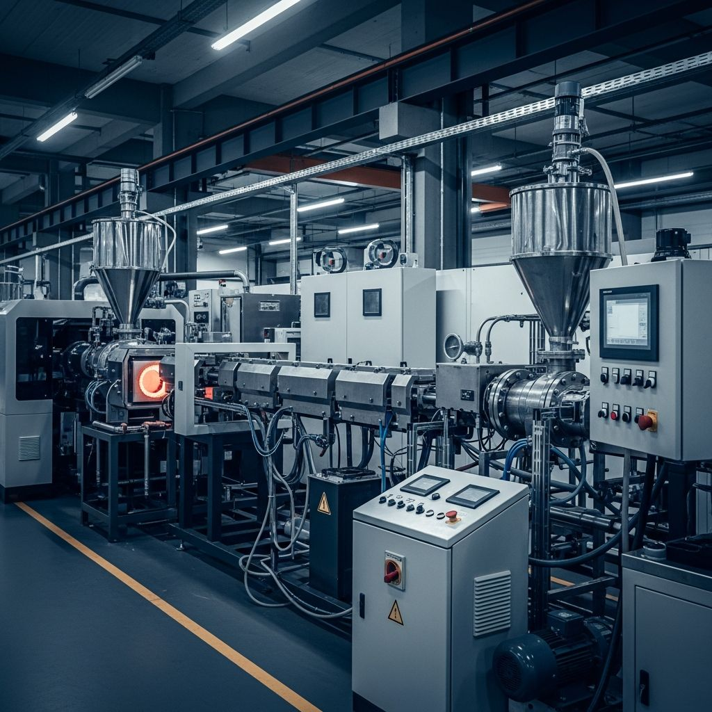
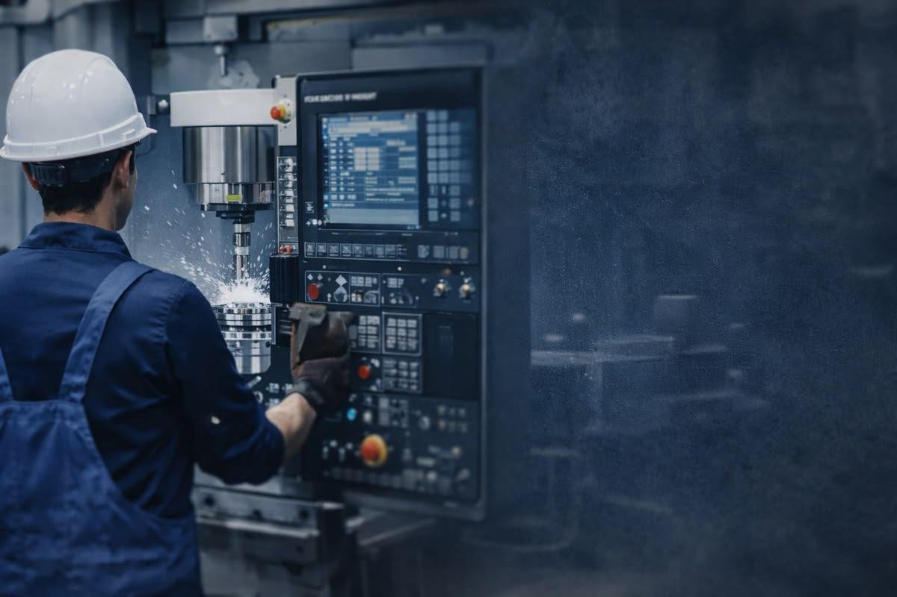

אודות RYS Plast
מפעל הזרקת פלסטיק עם ניסיון, דיוק ויכולת ייצור מתקדמת
RYS Plast פועלת כמפעל לייצור מוצרי פלסטיק לתעשייה ולבנייה, עם מערך מכונות מתקדם, שילוב אוטומציה, טכנולוגיית IML, ליווי הנדסי ותהליך עבודה מסודר שמכוון לדיוק, אמינות ותוצאה יציבה לאורך זמן.
12 מכונות הזרקה
90 עד 1080 טון
טכנולוגיית IML
ליווי הנדסי
מה מגדיר את המפעל
- ייצור מדויק לתעשייה ולבנייה
- שילוב אוטומציה ורובוטיקה בתהליך
- פתרונות הנדסיים ותפעול מסודר
- ליווי מקצועי משלב הצורך ועד למוצר מוגמר
הזרקת פלסטיק מדויקת
אוטומציה ורובוטיקה
טכנולוגיית IML
ליווי הנדסי
ייצור סדרתי
פתרונות לתעשייה ולבנייה
הזרקת פלסטיק מדויקת
אוטומציה ורובוטיקה
טכנולוגיית IML
ליווי הנדסי
ייצור סדרתי
פתרונות לתעשייה ולבנייה

מי אנחנו
מפעל שמחבר בין ניסיון תעשייתי, חדשנות תפעולית ושירות אמין
RYS Plast היא חברה המתמחה בייצור מוצרי פלסטיק מתקדמים לתעשייה ולבנייה, תוך הקפדה על איכות גבוהה, דיוק תפעולי והתאמה לצרכים משתנים של לקוחות ופרויקטים.
המפעל פועל מתוך הבנה שתהליך ייצור איכותי מתחיל בתיאום נכון, ממשיך בתכנון מקצועי, ומסתיים במוצר מוגמר שעומד בסטנדרט הנדרש, הן ברמת הדיוק והן ברמת העמידות והתוצאה בשטח.
לאורך הדרך אנו שומרים על תהליך עבודה ברור, זמינות מקצועית, ויכולת ללוות כל פרויקט משלב האפיון ועד לייצור סדרתי.
איכות ייצור גבוהה
פתרונות מותאמים אישית
חדשנות טכנולוגית
אמינות תפעולית
12
מכונות הזרקה פעילות
90–1080
טון לחיצה
IML
טכנולוגיה מתקדמת
360°
ליווי מקצועי והנדסי
מה מגדיר אותנו
העקרונות שמובילים את העבודה במפעל
דיוק ואחידות
תהליך הייצור נשען על הקפדה גבוהה, בקרה ואחידות לאורך כל שלבי העבודה.
אמינות תפעולית
שילוב של מערך ייצור יציב, ניהול מסודר וזמינות מקצועית ללקוחות.
חשיבה הנדסית
התאמת פתרונות ייצור לצרכים אמיתיים, עם הסתכלות מקצועית על ישימות ותוצאה.
מהירות תגובה
תהליך ברור ויעיל, שמאפשר לקדם פרויקטים בצורה מסודרת וללא עומס מיותר.
חדשנות תעשייתית
שימוש באוטומציה, רובוטיקה וטכנולוגיות ייצור מתקדמות לשיפור האיכות והקצב.
מחויבות לתוצאה
המיקוד הוא לא רק בייצור, אלא במסירת מוצר שמשרת את הלקוח לאורך זמן.
שיטת העבודה
איך אנחנו ניגשים לכל פרויקט
אפיון והבנת הצורך
תחילת העבודה מתבצעת מתוך הבנה ברורה של המוצר, הדרישות, הכמויות והיעד התפעולי.
בדיקה מקצועית והתאמה
בוחנים היתכנות, מתאימים את הפתרון הנכון, ומוודאים תהליך ייצור ישים ומדויק.
פיתוח, ייצור ובקרה
משלבים מערך מכונות, אוטומציה, בקרה ותיאום תפעולי כדי לשמור על יציבות לאורך הדרך.
מסירה והמשך עבודה
מלווים את הפרויקט גם לאחר הייצור, מתוך גישה של שותפות מקצועית ושירות זמין.

אוטומציה ורובוטיקה
טכנולוגיית IML
ליווי הנדסי
ייצור סדרתי
פתרונות לתעשייה ולבנייה
הנהלה ואנשי מפתח
הצוות שמוביל את הפעילות, הפיתוח והתפעול


מבנה כוח האדם במפעל
המפעל מורכב מ־5 קוונים, 2 אנשי תחזוקה, 4 מנהלי משמרות וכ־20 פועלים, כולם פועלים יחד כדי לשמור על רצף ייצור איכותי, מסודר ויעיל.
נראות המפעל
הייצור בפועל, סביבת העבודה והציוד שמניעים את התהליך
רצפת הייצור
סביבת עבודה מסודרת, נקייה ויעילה

מכונות הזרקה
דיוק תפעולי ויציבות לאורך התהליך

תוצרים ומרכיבים
פתרונות מותאמים לתעשייה ולבנייה
רוצים להבין איך RYS Plast יכולה להשתלב בפרויקט שלכם?
עברו לעמוד השירותים והמוצרים, בדקו את מערך המכונות, או השאירו פרטים ונחזור אליכם עם מענה מקצועי ותהליך עבודה מסודר.